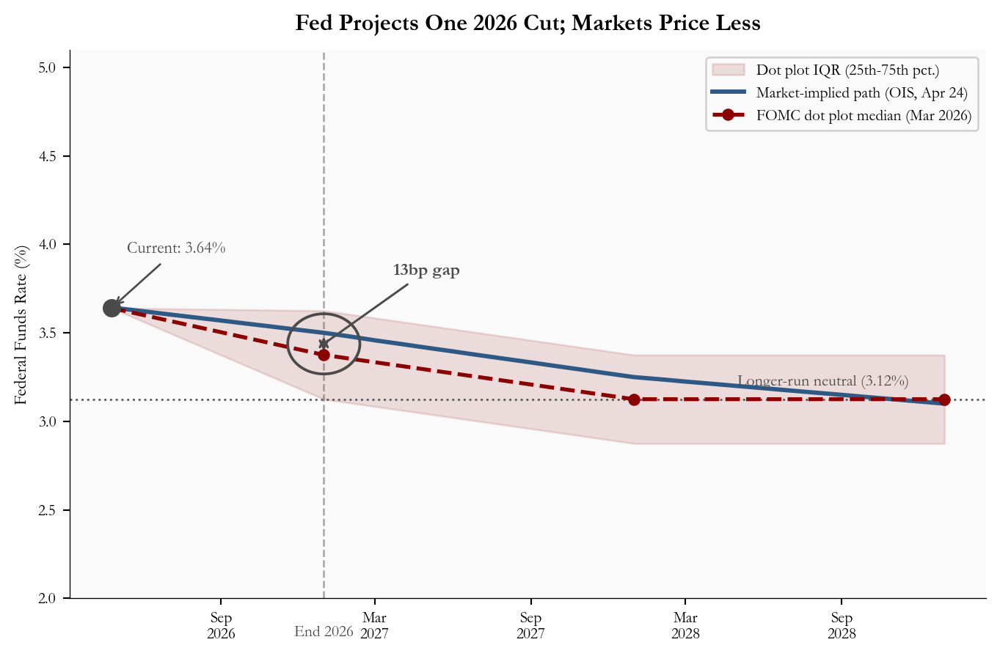
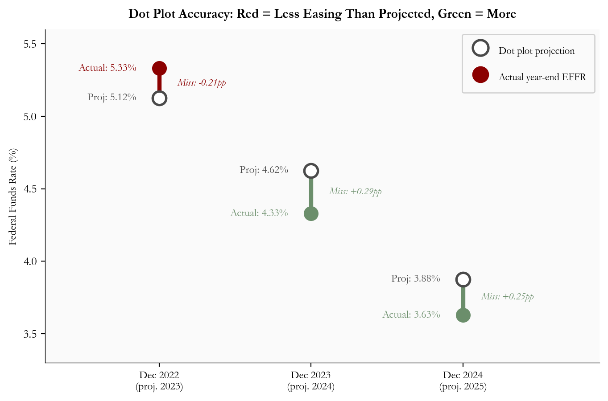
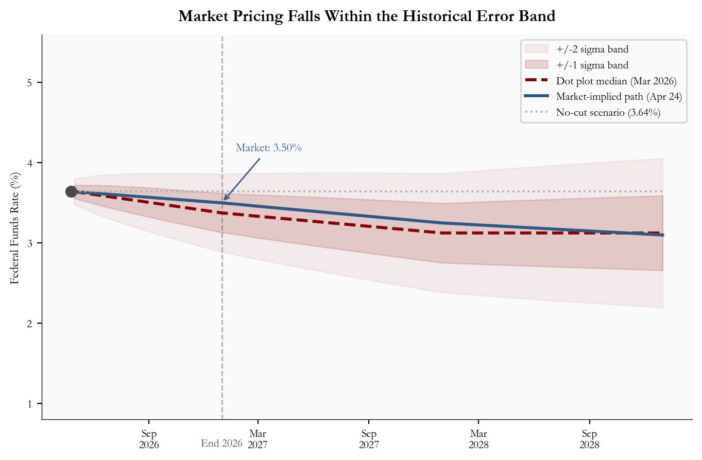
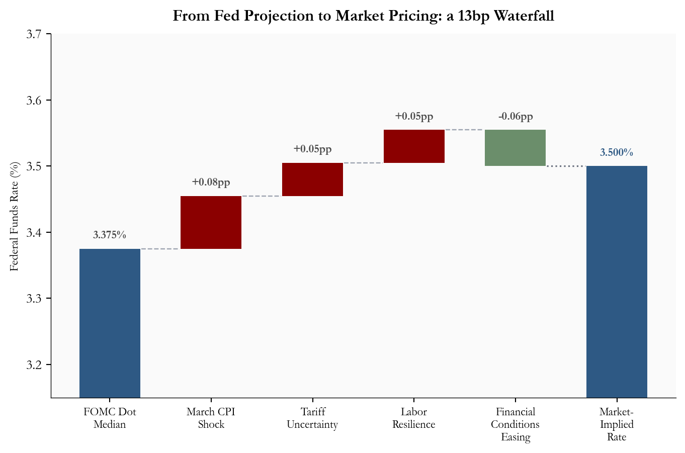
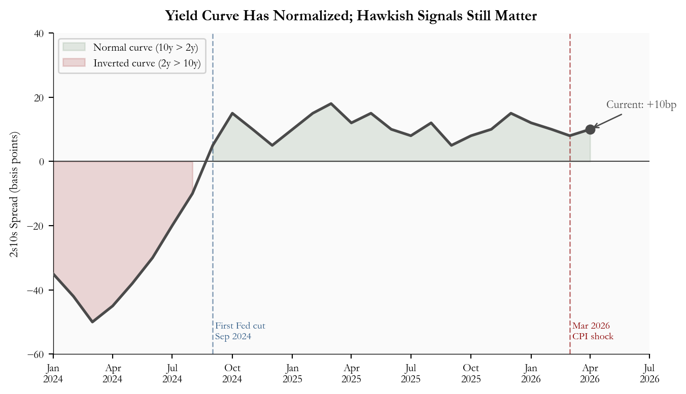

April 2026 Federal Open Market Committee (FOMC) Preview: Dot Plot and Market Rate Paths Reshuffled by CPI
Author
Yoram Gilboa
Published
April 25, 2026
The Federal Open Market Committee meets April 28-29, 2026 with the rate outlook at its most contested point since the cutting cycle began. For investors tracking the April 2026 FOMC meeting, the central issue is the gap between the Fed dot plot and the market-implied federal funds rate path. Two March data releases, published in the weeks before the blackout period, have reshuffled expectations sharply.
Headline CPI surged +0.9% month-over-month, its largest monthly gain since June 2022, driven almost entirely by a historic gasoline spike. March payrolls came in at 178,000 nonfarm jobs, a solid rebound from February’s weak print, with unemployment at 4.3%. Together, these prints have pushed markets to price less than one full 25-basis-point cut for all of 2026, down from a more confident easing path earlier in the year.
The FOMC’s own March forecast is published through the Fed’s dot plot: a chart where each policymaker places one anonymous “dot” showing where they think the federal funds rate should be at future year-ends. The median dot projects one full cut and a year-end rate of 3.38%. Market pricing is slightly higher, at 3.50%, which means traders are assigning meaningful weight to a no-cut outcome even though the median policymaker still sees one cut. This FOMC preview examines where that divergence comes from, how reliably the Fed has historically forecasted its own policy path, and what the range of outcomes means for yields, equities, and borrowing costs.
NoteNote on data
Official values in this post come from the Federal Reserve, FRED, BLS, CME FedWatch, and Polymarket where noted. The March 2026 dot-plot medians and interquartile range are taken from the Federal Reserve’s Summary of Economic Projections (SEP). Historical effective federal funds rate data are from FRED (FEDFUNDS), payroll and CPI data are from BLS, and current event probabilities are from CME FedWatch and Polymarket snapshots.
Author approximations are used where a single official time series is not directly available: the market-implied rate path is approximated from CME FedWatch/OIS-style pricing as of the April 24, 2026 close; yield-spread history approximates FRED DGS10 minus DGS2; and historical dot-plot comparison values are hand-entered from published SEP documents. Readers can verify the latest dot plot on the Federal Reserve’s SEP page and the latest market probabilities on the CME FedWatch tool.
1. What Is the Federal Open Market Committee?
The Federal Reserve System was created by the Federal Reserve Act of 1913, following a series of banking panics that exposed the fragility of the US financial system. The Federal Open Market Committee, the body that sets interest rate policy, took its current form through the Banking Act of 1935. The Fed’s own overview describes the FOMC as the monetary policymaking body that sets the stance of policy to pursue maximum employment and price stability.
The FOMC has 19 participants: the seven members of the Board of Governors and the 12 presidents of the regional Federal Reserve Banks. Of these, 12 vote at any given meeting: all seven governors, the New York Fed president, and four of the remaining eleven regional bank presidents on a rotating basis. The committee meets at least eight times per year. See the Federal Reserve’s FOMC structure overview for the formal membership rules.
Its mandate, set by Congress, is dual: maximum employment and stable prices. The Fed has operationalized “stable prices” as a 2% average annual inflation target, measured by the PCE price index. Its primary policy tool is the federal funds rate, the interest rate at which commercial banks borrow from each other overnight. When the Fed raises this rate, borrowing costs rise throughout the economy (mortgages, auto loans, corporate debt), slowing spending and cooling inflation. When it cuts, borrowing becomes cheaper, stimulating growth.
Decisions are made by committee vote, but in practice the Chair leads and the committee rarely votes against the Chair’s recommendation. Policy changes are announced in a statement on the final day of each meeting.
2. How the Dot Plot and Market-Implied Rate Path Work
The dot plot is shorthand for the FOMC’s Summary of Economic Projections (SEP), published four times per year (March, June, September, December). Each of the 19 participants, voters and non-voters alike, submits their anonymous forecast for where the federal funds rate will be at year-end for the next three years and over the longer run. These individual submissions are plotted as dots on a chart: one row of dots per projection year, with each dot representing one participant’s forecast. The median dot is the official summary statistic and is what this post refers to when discussing “the dot plot projection.” The Federal Reserve’s SEP guide explains that the median is the middle projection after individual projections are ordered from lowest to highest.
The market-implied rate path is derived from financial instruments, primarily overnight index swaps (OIS) and fed funds futures contracts, that pay out based on where interest rates actually land. CME FedWatch, for example, uses 30-Day Fed Funds futures prices to estimate probabilities for target-rate outcomes at scheduled FOMC meetings. Analysts can convert those probabilities into an expected rate path by taking a probability-weighted average across possible target ranges.
Why do they differ? The dot plot is a projection from policymakers who are also the ones setting rates; it reflects what they intend to do given their current view of the economy. Markets incorporate a wider information set: forward-looking surveys, financial conditions, geopolitical risks, and the distribution of possible economic outcomes, not just the central case. Markets also price in the possibility that the Fed’s own plans will change.
This post uses systematic optimism in the dot plot in a narrow sense. The median dot is a central-case forecast, not a risk distribution. If inflation risk is skewed upward, the central case can look benign while realized policy stays higher for longer. The dots show the path policymakers would take if inflation cooperates; markets price the risk that it does not. That distinction matters for reading the rate-path gap below.
TipFour Things to Remember
The April meeting is very likely a hold, not a rate-cut meeting; the market focus is on the statement and press conference.
The central disagreement is one cut vs not quite one cut: the March dot plot points to a full 25bp cut by year-end, while market pricing remains a bit higher.
The March CPI shock matters because it delays the confidence the Fed needs before cutting, even if part of the jump came from energy.
The dot plot is a central-case forecast, while market pricing embeds risk; that is why the market can sit above the median dot without rejecting the Fed’s baseline.
3. Rate Path Divergence: One Cut vs Partial Cut
The March 2026 dot plot median projects the federal funds rate at 3.38% by year-end 2026, one 25-basis-point cut from the current 3.50-3.75% target range. Markets, reading the same CPI and payroll data, are pricing in something closer to a partial cut: the expected end-2026 rate is 3.50%, about 13 basis points above the median dot.
The interquartile range (IQR) in Figure 1, shown as the shaded band around the dot plot path, represents the range between the 25th and 75th percentile of FOMC participant projections for year-end 2026. In practice, this means the middle half of FOMC members see end-2026 rates somewhere between 3.12% and 3.62%. The market-implied path at 3.50% sits inside that band but above the median dot. Markets are not rejecting the Fed’s forecast; they are assigning more weight than the median dot to the risk that the Fed waits longer.
The vertical dashed line marks year-end 2026, the point where the 13-basis-point gap between the two paths is most visible. Both paths converge toward the longer-run neutral rate of 3.12% by 2028, but the path through 2026-2027 is where the uncertainty concentrates.
Show code
# =============================================================================# FIGURE 1: RATE PATH COMPARISON# Goal: show the gap between what the Fed itself projects and what financial# markets are pricing. The key message is the end-2026 wedge.# =============================================================================# Build the dot plot path as a connected series: start from today's rate,# then connect to the median projections at each year-end.dot_x = [current_date] +list(dot_dates_eoy) # x values: datesdot_y_med = [current_effr] +list(dot_median) # y values: median rate at each datedot_y_lo = [current_effr] +list(dot_iqr_lo) # lower edge of IQRdot_y_hi = [current_effr] +list(dot_iqr_hi) # upper edge of IQR# figsize=(width, height) in inches. We cap width at 7.2 so the chart fits# within the blog content column without requiring horizontal scrolling.fig, ax = plt.subplots(figsize=(7.2, 4.8))# --- IQR shaded band ---# fill_between shades the area between two y-series along the same x-axis.# alpha controls transparency: 0 = invisible, 1 = solid. 0.12 gives a subtle tint.ax.fill_between(dot_x, dot_y_lo, dot_y_hi, color=COLORS["accent"], alpha=0.12, label="Dot plot IQR (25th-75th pct.)")# --- Market-implied OIS path ---# A solid line representing what futures and swap markets are pricing.ax.plot(mkt_dates, mkt_rates, color=COLORS["primary"], lw=2.2, zorder=3, label="Market-implied path (OIS, Apr 24)")# --- Dot plot median path ---# Dashed line with circular markers at each year-end projection.# lw = line width; ms = marker size; zorder puts this on top of the shading.ax.plot(dot_x, dot_y_med, "--o", color=COLORS["accent"], lw=2, ms=5.2, zorder=4, label="FOMC dot plot median (Mar 2026)")# --- Current rate dot and label ---# scatter() draws a single point. s= is the marker area in points squared.ax.scatter([current_date], [current_effr], color=COLORS["neutral"], zorder=5, s=70)# annotate() draws a text label with an optional arrow.# xytext=(x, y) in "offset points" means: shift the label this many points# from the data point. arrowprops controls the arrow style.ax.annotate(f"Current: {fmt_rate(current_effr)}%", xy=(current_date, current_effr), xytext=(8, 28), textcoords="offset points", fontsize=8.5, color=COLORS["neutral"], arrowprops=dict(arrowstyle="->", color=COLORS["neutral"], lw=1))# --- End-2026 vertical marker ---# axvline draws a vertical line spanning the full chart height at a given x value.# linestyle="--" makes it dashed; alpha=0.45 keeps it from dominating the chart.eoy2026 = pd.Timestamp("2026-12-31")ax.axvline(eoy2026, color=COLORS["neutral"], lw=1, linestyle="--", alpha=0.45, zorder=1)# Place a small label at the x-axis level. xycoords=("data", "axes fraction")# means the x-coordinate is a date, while y=0 sits exactly on the axis baseline.ax.annotate("End 2026", xy=(eoy2026, 0), xycoords=("data", "axes fraction"), xytext=(0, -14), textcoords="offset points", ha="center", va="top", fontsize=8, color=COLORS["neutral"])# --- Gap annotation at end-2026 ---# The gap is small on the full chart, so we circle the two relevant points# and point a label to that highlighted area. Ellipse width is in date units# (days) because the x-axis is a Matplotlib date axis; height is in rate points.mid_y = (dot_median[0] + stats["market_implied_eoy2026"]) /2ax.annotate("", xy=(eoy2026, dot_median[0]), xytext=(eoy2026, stats["market_implied_eoy2026"]), arrowprops=dict(arrowstyle="<->", color=COLORS["neutral"], lw=1.2))gap_circle = Ellipse( (mdates.date2num(eoy2026), mid_y), width=85, height=0.34, fill=False, edgecolor=COLORS["neutral"], linewidth=1.4, linestyle="-", zorder=6)ax.add_patch(gap_circle)ax.annotate(f"{stats['wedge_bps']}bp gap", xy=(eoy2026, mid_y), xytext=(pd.Timestamp("2027-05-01"), 3.85), fontsize=9, color=COLORS["neutral"], fontweight="bold", ha="center", va="center", arrowprops=dict(arrowstyle="-", color=COLORS["neutral"], lw=1.1))# --- Longer-run neutral reference line ---ax.axhline(stats["longer_run_neutral"], color=COLORS["neutral"], lw=1.1, linestyle=":", alpha=0.85)ax.text(pd.Timestamp("2028-05-01"), stats["longer_run_neutral"] +0.08,f"Longer-run neutral ({fmt_rate(stats['longer_run_neutral'])}%)", fontsize=8.2, color=COLORS["neutral"], ha="left")# --- Axis formatting ---ax.set_ylabel("Federal Funds Rate (%)", fontsize=9)ax.set_ylim(2.0, 5.1)# legend() places a key in the chart. framealpha controls the box transparency.ax.legend(fontsize=8, loc="upper right", framealpha=0.88)# DateFormatter controls how dates appear on the x-axis.# "%b\n%Y" means abbreviated month on one line, year below it (e.g. "Apr\n2026").ax.xaxis.set_major_formatter(mdates.DateFormatter("%b\n%Y"))ax.xaxis.set_major_locator(mdates.MonthLocator(interval=6))ax.tick_params(labelsize=8)ax.set_title("Fed Projects One 2026 Cut; Markets Price Less", fontsize=12, fontweight="bold", pad=10)# tight_layout() automatically trims blank margins so nothing gets cut off.plt.tight_layout()

Figure 1: FOMC dot plot median path (March 2026 SEP) vs market-implied federal funds rate path through 2028. The shaded band is the dot plot interquartile range, the middle 50% of FOMC participant projections, and the circled end-2026 area highlights the gap between the median dot and market pricing. source: FOMC SEP (March 2026), CME FedWatch and futures-implied pricing (April 24, 2026 close).
4. Historical Forecast Accuracy: How Reliable Is the Dot Plot?
The dot plot’s track record is instructive, but the December 2021 miss is so large that it distorts the scale of any chart that includes it. At that meeting, the median dot showed the federal funds rate staying near zero through 2022, just before the fastest tightening cycle in four decades. Figure 2 excludes that outlier so the more recent forecast misses remain readable.
Excluding that episode, the pattern since the hiking cycle is more nuanced. At the December 2022 meeting, the dot plot projected end-2023 at 5.125%; the actual year-end effective rate was 5.33%, a 21-basis-point undershoot. At December 2023, the median projected end-2024 at 4.625%; the Fed cut more aggressively than planned and the year-end rate landed near 4.33%, a 30-basis-point overshoot. At December 2024, the median projected end-2025 at 3.875%; the year-end rate landed closer to 3.625%, another overshoot. The point is not that the dots always miss in one direction. It is that the median dot suppresses uncertainty: it is a useful baseline, but a weak guide to the tails.
Figure 2 reads the divergence for each meeting: a red line means the actual rate was higher than the dot plot projected (policy ended tighter than projected), while a green line means the actual rate was lower than projected (policy ended easier than projected).
Show code
# =============================================================================# FIGURE 2: CONNECTED DOT (DUMBBELL) CHART - historical forecast accuracy# This chart type is ideal for showing the gap between two values for the# same category. Each vertical line connects "what was projected" to "what# actually happened." Color encodes the direction of the miss.# =============================================================================# Historical data: December FOMC meeting projections vs actual year-end EFFR.# "actual_effr" is the December average effective federal funds rate for that year.hist = pd.DataFrame({"meeting": ["Dec 2022", "Dec 2023", "Dec 2024"],"label": ["Dec 2022\n(proj. 2023)","Dec 2023\n(proj. 2024)", "Dec 2024\n(proj. 2025)"],"dot_median": [5.125, 4.625, 3.875],"actual_effr": [5.33, 4.33, 3.63],})hist["error"] = hist["dot_median"] - hist["actual_effr"] # positive = dot too highfig, ax = plt.subplots(figsize=(7.2, 4.8))for i, row in hist.iterrows(): proj = row["dot_median"] actual = row["actual_effr"] error = row["error"]# Choose color based on the direction of the miss.# error < 0 means actual > dot, less easing, red# error > 0 means actual < dot, more easing, greenif error <0: line_color = COLORS["accent"] # red: less easing than projected miss_label =f"Miss: {error:.2f}pp"else: line_color = COLORS["secondary"] # green: more easing than projected miss_label =f"Miss: +{error:.2f}pp"# vlines() draws a vertical line from y1 to y2 at a given x position.# We draw it between the projected and actual rate levels. ax.vlines(i, min(proj, actual), max(proj, actual), colors=line_color, linewidth=3.5, zorder=2)# Draw the dot for the projected rate.# edgecolors and facecolors together make an open circle (hollow dot). ax.scatter(i, proj, s=130, zorder=4, facecolors="white", edgecolors=COLORS["neutral"], linewidths=2, label="Dot plot projection"if i ==0else"")# Draw the dot for the actual rate. Filled with the error color. ax.scatter(i, actual, s=130, zorder=4, color=line_color, label="Actual year-end EFFR"if i ==0else"")# Label each dot with its rate value.# ha="right" places text to the left of the dot; offset by -0.12 x-units. ax.text(i -0.15, proj, f"Proj: {proj:.2f}%", ha="right", va="center", fontsize=9, color=COLORS["neutral"]) ax.text(i -0.15, actual, f"Actual: {actual:.2f}%", ha="right", va="center", fontsize=9, color=line_color)# Place the miss label between the two dots, centered horizontally. mid_y = (proj + actual) /2 ax.text(i +0.12, mid_y, miss_label, ha="left", va="center", fontsize=8.5, color=line_color, style="italic")# Set x-axis ticks and labels from the DataFrame.ax.set_xticks(range(len(hist)))ax.set_xticklabels(hist["label"], fontsize=9)ax.set_ylabel("Federal Funds Rate (%)", fontsize=9)ax.set_ylim(3.3, 5.6)ax.set_xlim(-0.75, len(hist) -0.1)ax.legend(fontsize=8.5, loc="upper right", framealpha=0.88, labelspacing=1.1, handleheight=2.0, markerscale=1.15, borderpad=0.8)ax.set_title("Dot Plot Accuracy: Red = Less Easing Than Projected, Green = More", fontsize=11, fontweight="bold", pad=10)err_std = hist["error"].std()err_mean = hist["error"].mean()plt.tight_layout()

Figure 2: Dot plot median projection vs actual year-end effective federal funds rate, excluding the December 2021 outlier. Each vertical connector compares the projected year-end policy rate with the realized effective federal funds rate; red means policy ended tighter than projected, while green means policy ended easier. source: FOMC SEP and FRED FEDFUNDS. Error equals dot minus actual.
The fan chart below applies those historical error distributions to the current March 2026 projection. The 1-sigma band runs from roughly 3.09% to 3.66% for end-2026. The market-implied path of 3.50% sits within that band. A no-cut scenario, with rates holding at the current 3.64%, is also within one standard deviation of the historical track record.
Show code
# =============================================================================# FIGURE 3: FAN CHART - forward path uncertainty# A fan chart shows a central forecast with uncertainty bands that widen# over time (the further out you forecast, the less certain you are).# The bands here are calibrated to how wrong the dot plot has historically been.# =============================================================================# Build a monthly date range from today through end-2028.forecast_dates = pd.date_range("2026-04-25", "2028-12-31", freq="ME")n_f =len(forecast_dates)# Interpolate the dot plot median path to monthly frequency.# np.interp(x, xp, fp) returns linearly interpolated values.# We define 4 waypoints (now, end-2026, end-2027, end-2028) and fill in the months.dot_path = np.interp( np.arange(n_f), [0, 8, 20, 32], [current_effr, dot_median[0], dot_median[1], dot_median[2]],)# Uncertainty grows with the forecast horizon. We use the historical standard# deviation of ~0.35pp per year and scale it to monthly granularity using the# square-root-of-time rule (standard statistical practice for compounding uncertainty).sigma_annual = stats["error_std_recent"]sigma_m = np.array([sigma_annual * np.sqrt((i +1) /12) for i inrange(n_f)])fig, ax = plt.subplots(figsize=(7.2, 4.8))# Draw the +/-2 sigma band first (widest, most transparent).ax.fill_between(forecast_dates, dot_path -2* sigma_m, dot_path +2* sigma_m, color=COLORS["accent"], alpha=0.06, label="+/-2 sigma band")# Draw the +/-1 sigma band on top (narrower, slightly more opaque).ax.fill_between(forecast_dates, dot_path - sigma_m, dot_path + sigma_m, color=COLORS["accent"], alpha=0.15, label="+/-1 sigma band")# Dot plot median center line.ax.plot(forecast_dates, dot_path, "--", color=COLORS["accent"], lw=2.2, label="Dot plot median (Mar 2026)")# Market-implied path.ax.plot(mkt_dates, mkt_rates, color=COLORS["primary"], lw=2.2, label="Market-implied path (Apr 24)")# No-cut scenario: a flat horizontal line at the current rate.# np.full(n, val) creates an array of n copies of val.ax.plot(forecast_dates, np.full(n_f, current_effr), ":", color=COLORS["light"], lw=1.4, label=f"No-cut scenario ({fmt_rate(current_effr)}%)")ax.scatter([current_date], [current_effr], color=COLORS["neutral"], zorder=5, s=60)# Annotate the market path at end-2026 with its value.ax.annotate(f"Market: {fmt_rate(stats['market_implied_eoy2026'])}%", xy=(pd.Timestamp("2026-12-31"), stats["market_implied_eoy2026"]), xytext=(58, 38), textcoords="offset points", fontsize=8.5, color=COLORS["primary"], ha="right", arrowprops=dict(arrowstyle="->", color=COLORS["primary"], lw=1))eoy2026 = pd.Timestamp("2026-12-31")ax.axvline(eoy2026, color=COLORS["neutral"], lw=1, linestyle="--", alpha=0.45, zorder=1)ax.annotate("End 2026", xy=(eoy2026, 0), xycoords=("data", "axes fraction"), xytext=(0, -14), textcoords="offset points", ha="center", va="top", fontsize=8, color=COLORS["neutral"])ax.set_ylabel("Federal Funds Rate (%)", fontsize=9)ax.set_ylim(0.8, 5.6)ax.legend(fontsize=8, loc="upper right", framealpha=0.88)ax.xaxis.set_major_formatter(mdates.DateFormatter("%b\n%Y"))ax.xaxis.set_major_locator(mdates.MonthLocator(interval=6))ax.tick_params(labelsize=8)ax.set_title("Market Pricing Falls Within the Historical Error Band", fontsize=12, fontweight="bold", pad=10)plt.tight_layout()

Figure 3: Fan chart for the federal funds rate path from April 2026 through end-2028. The dashed line is the FOMC dot plot median, the shaded bands show one- and two-standard-deviation uncertainty ranges calibrated from recent forecast errors, and the market-implied path and no-cut scenario are overlaid. source: FOMC SEP, CME FedWatch, and FRED.
5. What Is Driving the Rate-Path Wedge
Four identifiable factors explain why market pricing sits 13 basis points above the dot-plot median for end-2026. Figure 4 shows how each contributes to the total gap, building from the FOMC’s projection to the market-implied rate as a waterfall of adjustments.
The March CPI shock is the largest single driver. The BLS March CPI release reported headline CPI up +0.9% month-over-month, with gasoline accounting for nearly three quarters of the monthly increase. That pushes back the timing at which the Fed can express the confidence needed to cut. Even though core CPI rose a more contained +0.2% month-over-month, the headline number affects the political and communications calculus for the committee.
Tariff and geopolitical uncertainty add a second layer of risk premium. The March 2026 FOMC projection materials describe each participant’s rate projection as conditional on that participant’s own view of appropriate policy and the economic outlook. That matters because tariff, energy, and Middle East risks can change the inflation outlook quickly, even when the median dot still shows one cut.
Labor market resilience removes urgency. The BLS Employment Situation release reported 178,000 nonfarm jobs added in March and unemployment little changed at 4.3%. That gives the FOMC no compelling employment-side argument to cut before inflation is clearly resolved.
Financial conditions easing provides a partial offset. Long-term Treasury yields moved lower in recent weeks as growth concerns competed with inflation concerns, which loosens financial conditions independently of the fed funds rate and reduces the pressure to cut.
Show code
# =============================================================================# FIGURE 4: WATERFALL CHART - gap decomposition# A waterfall chart shows how a starting value changes step by step until# it reaches the final value. Each bar represents one contributing factor.# Positive bars (red) push the rate up; negative bars (green) pull it down.# =============================================================================# Define the factors and their contributions in percentage points.# These sum to about 0.125pp (the roughly 13bp wedge between 3.375% and 3.50%).factor_labels = ["FOMC Dot\nMedian","March CPI\nShock","Tariff\nUncertainty","Labor\nResilience","Financial\nConditions\nEasing","Market-\nImplied\nRate",]# The first entry is the starting level; middle entries are deltas;# the last entry is the final level (not a delta).deltas = [3.375, +0.08, +0.05, +0.05, -0.055]final_val =3.50# 3.375 + 0.08 + 0.05 + 0.05 - 0.055 = 3.50# Build bar bottoms (where each bar starts) and heights (how tall each bar is).# We track a running cumulative total as we go.running =0.0bar_bottoms = []bar_heights = []bar_colors_wf = []for i, d inenumerate(deltas):if i ==0:# Starting bar: drawn from zero up to the dot plot median. bar_bottoms.append(0) bar_heights.append(d) bar_colors_wf.append(COLORS["primary"]) running = delif d >0:# Positive delta: bar stacks on top of the current running total. bar_bottoms.append(running) bar_heights.append(d) bar_colors_wf.append(COLORS["accent"]) running += delse:# Negative delta: bar drawn at the *lower* end of the segment it covers.# Bottom = running + d (the level after the reduction).# Height = |d| (the magnitude of the reduction, always positive for matplotlib).# Color = green to signal this factor works against the upward pressure. bar_bottoms.append(running + d) bar_heights.append(-d) bar_colors_wf.append(COLORS["secondary"]) running += d# Final bar: drawn from zero to the market-implied level (like the starting bar).bar_bottoms.append(0)bar_heights.append(final_val)bar_colors_wf.append(COLORS["primary"])x_pos = np.arange(len(factor_labels))fig, ax = plt.subplots(figsize=(7.2, 4.8))# ax.bar(x, height, bottom) draws each bar.# width=0.6 makes bars slightly narrower than the default, giving more white space.bars = ax.bar(x_pos, bar_heights, bottom=bar_bottoms, color=bar_colors_wf, edgecolor="none", width=0.6, zorder=2)# Add dashed connector lines showing where the running total lands after each step.# These lines run from the right edge of bar i to the left edge of bar i+1.connector_ys = []running2 =0.0for i, d inenumerate(deltas): running2 += dif i <len(deltas) -1: connector_ys.append(running2)for i, cy inenumerate(connector_ys):# hlines draws a horizontal line at y=cy, from x=i+0.31 to x=i+1-0.31.# This leaves a small gap between the connector and the next bar. ax.hlines(cy, i +0.31, i +0.69, colors="#9ca3af", linestyles="dashed", linewidth=0.9)# Connect the bottom of the final negative bar to the top of the final level.# This makes explicit that the waterfall lands exactly at the market-implied rate.ax.hlines(final_val, 4+0.31, 5-0.31, colors="#6b7280", linestyles="dotted", linewidth=1.2)# Add value labels above each bar.# We track the running total again to know where to place each label.running3 =0.0label_offset =0.012# small vertical gap between top of bar and the labelfor i, d inenumerate(deltas):if i ==0: label_text =f"{d:.3f}%" label_y = d + label_offset running3 = delif d >0: label_text =f"+{d:.2f}pp" label_y = running3 + d + label_offset running3 += delse:# For negative bars: label near the top of the segment being reduced. label_text =f"{d:.2f}pp" label_y = running3 + label_offset # top of the range before reduction running3 += d ax.text(i, label_y, label_text, ha="center", va="bottom", fontsize=8.5, color=COLORS["neutral"], fontweight="bold")# Label the final bar.ax.text(len(deltas), final_val + label_offset, f"{final_val:.3f}%", ha="center", va="bottom", fontsize=8.5, color=COLORS["primary"], fontweight="bold")ax.axhline(0, color="#444", lw=0.6)ax.set_xticks(x_pos)ax.set_xticklabels(factor_labels, fontsize=8.5)ax.set_ylabel("Federal Funds Rate (%)", fontsize=9)ax.set_ylim(3.15, 3.7)ax.set_title("From Fed Projection to Market Pricing: a 13bp Waterfall", fontsize=12, fontweight="bold", pad=10)plt.tight_layout()

Figure 4: Waterfall chart decomposing the roughly 13bp gap between the FOMC dot plot median (3.375%) and the market-implied end-2026 rate (3.50%). Each bar shows one factor’s estimated contribution to the wedge; red bars push market pricing above the dot plot and green bars work in the other direction. source: BLS, FOMC SEP, CME FedWatch, and author’s analysis.
6. Policy and Market Signals
The April meeting is widely expected to produce a hold. Polymarket’s April Fed decision market was pricing a 99.7% probability of no change as of April 25, and CME FedWatch was also near unanimous for a hold. The action is in the statement language and the press conference.
Two signals will determine the market reaction. First, whether the committee shifts its balance-of-risks language explicitly toward inflation, a hawkish lean that would compress remaining rate-cut expectations. Second, whether Chair Powell describes the March CPI spike as transitory energy noise or as a complicating factor requiring additional data. A statement that leans cautiously on inflation while preserving optionality is the base case.
The 2s10s spread (the difference between the 10-year and 2-year Treasury yields, a common gauge of yield curve shape) helps contextualize the market backdrop. When the 10-year yield exceeds the 2-year, the spread is positive and the curve is said to be “normal.” When 2-year yields are higher, as they were for much of 2023 and 2024 when markets expected rate cuts that had not yet arrived, the curve is “inverted” and the spread is negative. Persistent inversion has historically preceded recessions, though the relationship is noisy.
Figure 5 shows the 2s10s spread since early 2024. The curve inverted deeply during the peak-rate period, began normalizing when the Fed cut in September 2024, and has since settled into a modest positive slope. The March 2026 CPI shock caused a slight flattening as 2-year yields repriced higher faster than the long end. At 10 basis points, the spread remains mildly positive but is sensitive to any hawkish surprise from the April meeting.
Show code
# =============================================================================# FIGURE 5: 2s10s YIELD SPREAD OVER TIME# The 2s10s spread is one of the most-watched indicators of yield curve shape.# Plotting it over time shows how rate expectations have evolved.# =============================================================================# Monthly 2s10s spread data (10yr - 2yr, in basis points).# In a future-data scenario such as this post, this data is approximated.# In a live post, replace this with FRED series DGS10 minus DGS2.dates_spread = pd.date_range("2024-01-01", "2026-04-01", freq="MS")spread_bp = np.array([# 2024: deeply inverted curve through mid-year, normalizing as Fed cuts begin Sep-35, -42, -50, -45, -38, -30, -20, -10, 5, 15, 10, 5,# 2025: mildly positive slope, some volatility as Fed pauses10, 15, 18, 12, 15, 10, 8, 12, 5, 8, 10, 15,# 2026: slight flattening after March CPI shock12, 10, 8, 10,])fig, ax = plt.subplots(figsize=(7.2, 4.2))# Fill area above/below zero with different colors to visually separate# normal (positive spread) from inverted (negative spread) periods.# np.maximum(a, b) returns element-wise maximum; used to clip the series at zero.ax.fill_between(dates_spread, spread_bp, 0, where=(spread_bp >=0), color=COLORS["secondary"], alpha=0.18, label="Normal curve (10y > 2y)")ax.fill_between(dates_spread, spread_bp, 0, where=(spread_bp <0), color=COLORS["accent"], alpha=0.15, label="Inverted curve (2y > 10y)")# Main spread line.ax.plot(dates_spread, spread_bp, color=COLORS["neutral"], lw=2, zorder=3)ax.set_ylim(-60, 40)ax.set_xlim(pd.Timestamp("2024-01-01"), pd.Timestamp("2026-07-01"))# Zero reference line - this is the boundary between normal and inverted.ax.axhline(0, color="#444", lw=0.8, linestyle="-")# Mark key events with vertical dashed lines and labels.# September 2024: first Fed rate cut of the cutting cycle.fed_cut_date = pd.Timestamp("2024-09-01")ax.axvline(fed_cut_date, color=COLORS["primary"], lw=1, linestyle="--", alpha=0.55)ax.text(fed_cut_date, -56," First Fed cut\n Sep 2024", fontsize=7.5, color=COLORS["primary"], va="bottom")# March 2026: CPI shock publication.cpi_shock_date = pd.Timestamp("2026-03-01")ax.axvline(cpi_shock_date, color=COLORS["accent"], lw=1, linestyle="--", alpha=0.55)ax.text(cpi_shock_date, -56, " Mar 2026\n CPI shock", fontsize=7.5, color=COLORS["accent"], ha="left", va="bottom")# Current value annotation.ax.scatter([dates_spread[-1]], [spread_bp[-1]], color=COLORS["neutral"], zorder=5, s=42)ax.annotate(f"Current: +{stats['spread_current_bps']}bp", xy=(dates_spread[-1], spread_bp[-1]), xytext=(12, 18), textcoords="offset points", fontsize=8.5, color=COLORS["neutral"], ha="left", va="center", arrowprops=dict(arrowstyle="->", color=COLORS["neutral"], lw=1))ax.set_ylabel("2s10s Spread (basis points)", fontsize=9)ax.xaxis.set_major_formatter(mdates.DateFormatter("%b\n%Y"))ax.xaxis.set_major_locator(mdates.MonthLocator(interval=3))ax.tick_params(labelsize=8)ax.legend(fontsize=8, loc="upper left", framealpha=0.88)ax.set_title("Yield Curve Has Normalized; Hawkish Signals Still Matter", fontsize=11, fontweight="bold", pad=10)plt.tight_layout()

Figure 5: 2s10s Treasury yield spread, measured as the 10-year Treasury yield minus the 2-year Treasury yield, from January 2024 through April 2026. Positive values indicate a normal yield curve, negative values indicate inversion, and the March 2026 CPI shock is marked as a recent flattening event. source: FRED DGS2 and DGS10, approximated for 2025-2026.
7. What It Means
For the Fed: This meeting is not a decision point; it is a communications exercise. The March CPI shock gives the committee reason to hold and reason to signal patience. The challenge is threading the needle between acknowledging upside inflation risk (from energy, tariffs) and preserving credibility on the eventual path toward lower rates. Chair Powell’s description of the March print as either “transitory noise” or “a complicating factor” will be read carefully by markets. Statement language that tilts toward the former extends the window for a June or July cut; language that emphasizes uncertainty pushes the first cut firmly to Q4 or beyond.
For consumers: A hold means no immediate relief on borrowing costs. Mortgage rates, auto loan rates, and variable credit card rates all track short-term interest rate expectations. The practical timeline for lower consumer borrowing costs is tied not to the April meeting but to whether April and May CPI data confirm that the March energy spike was a one-month event.
For equity markets: Rate-sensitive sectors, including utilities, REITs, and long-duration growth stocks, remain under pressure as long as the front end of the yield curve stays elevated. A hawkish statement surprise (no reference to future cuts) could trigger a short-term selloff in those sectors. The base case, a hold with neutral language, is largely priced in and should produce a muted equity reaction.
For fixed income: Short-dated Treasuries are stable at current yields; the hold is fully priced. The real positioning question is in the long end. If the April statement is hawkish enough to push 2-year yields higher, but growth concerns keep 10-year yields from moving in parallel, the 2s10s spread could flatten or briefly re-invert. A spread that holds above zero through the meeting would be mildly positive for the view that the cutting cycle eventually resumes.
8. Conclusion
The April 2026 FOMC meeting opens with a clear structural question: does the March CPI shock represent a temporary energy spike or the beginning of a stickier reacceleration? The 13-basis-point gap between the Fed’s own median projection and what markets are pricing is the market’s answer: a measured bet that the Fed may not get enough inflation reassurance to deliver even the single cut in the median dot. Historical dot-plot accuracy gives that market skepticism a reasonable empirical foundation: the median dot is useful, but it is a baseline, not a promise. April 29 is a hold and a communications test. The next decisive data point arrives on May 12, 2026, when April CPI will tell us whether the gasoline shock reversed or whether a new inflation chapter has begun.
Data sources: Dot plot projections are median year-end federal funds rate midpoints from published FOMC SEP documents, with 2026-2028 medians taken from the March 2026 SEP. Market-implied rates approximate the OIS forward curve via CME FedWatch as of the April 24, 2026 close. Yield spread data approximate FRED DGS10 minus DGS2.
Series
Description
Source
FOMC SEP
Summary of Economic Projections (dot plot medians)
Federal Reserve
FEDFUNDS
Effective federal funds rate (monthly)
FRED / Federal Reserve
CPIAUCSL
CPI All Items, seasonally adjusted
FRED / BLS
CPILFESL
Core CPI, seasonally adjusted
FRED / BLS
PAYEMS
Total nonfarm payrolls
FRED / BLS
UNRATE
Civilian unemployment rate
FRED / BLS
DGS2, DGS10
2-year and 10-year Treasury constant maturity yields
FRED / Treasury
OIS / Futures
Market-implied rate path (Apr 24, 2026)
CME FedWatch
Polymarket
Prediction market probabilities (Apr 24, 2026)
Polymarket
Author calculations
Dot-plot medians for 2026-2028 from the March 2026 SEP; market path snapshot as of April 24, 2026 close